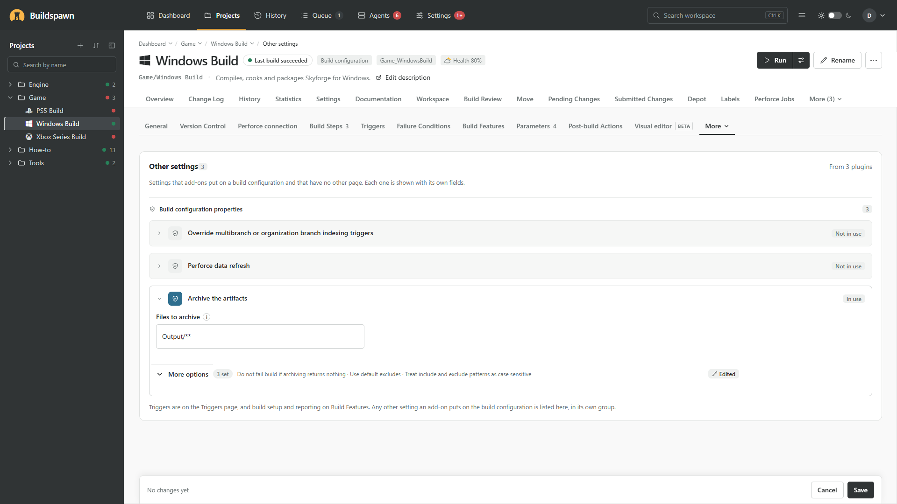

Other settings
Settings that add-ons put on a build configuration and that have no page of their own.
When to use it
Use it to find a setting that you cannot see on the other tabs. Triggers are on the Triggers tab and build setup and reporting on Build Features. Any other setting is listed here, in a group named after the add-on that adds it. It is under More.

How to set it up
- Open the build configuration and click Settings. Then click More › Other settings.
- Find the group of the add-on. The header says From N plugins.
- Change the fields and click Save.
Every field
| Field | What it does | Default | Example |
|---|---|---|---|
| Group per add-on | Each group shows the fields of the setting, for example Refresh Perforce lists on a custom interval. | - | - |
| (no settings) | When no add-on adds anything the page says so. | - | - |
A worked example
The Perforce add-on adds Refresh Perforce lists on a custom interval. On Windows Build the studio sets Interval to 300 seconds. See Job settings.
What you see when it runs
The settings are saved with the build configuration. They take effect on the next build.
Problems and fixes
| Problem | What to do |
|---|---|
| The page is empty | No add-on has a setting for this build configuration. |